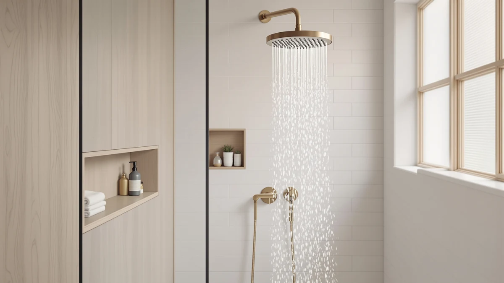

Psylc Shower Head Review (2026): Worth It?
Prices and picks verified as of November 2026. Independent, reader-supported reviews.


Quick Answer
Our psylc shower head review finds a $49.77 combo that pairs a 13-inch rainfall head with a four-mode handheld wand on a brass extension arm, a strong value if wider coverage matters more to you than an established review history. If you prefer a shower head with thousands of verified owner reviews behind it, the Delta In2ition below is the safer alternative at nearly the same price.
Our pick: Shower Head with Handheld 13" at $49.77 Check Price on Amazon
Bottom line: our top pick is the Shower Head with Handheld at $49.77.
Things to Know Before You Buy
- All four shower heads compared in this psylc shower head review sit within about 60 cents of each other, so price will not be the deciding factor.
- The Psylc ships with a 13-inch fixed rain head, the widest in this comparison. The Razime and BOZYBO use 12-inch square heads, and the Delta's fixed head is smaller still.
- The Amazon listing we checked shows no star rating or review count for the Psylc, while the Delta In2ition carries years of owner reviews.
- Psylc builds the extension arm from brass and stainless steel rather than plastic, a detail worth checking on any combo in this price range since metal joints tend to outlast composite ones.
This psylc shower head review compares the Psylc Shower Head with Handheld against three similarly priced rivals on specs, pricing, and the owner feedback we could verify, because the biggest difference between combo shower heads in this price bracket usually comes down to whether anyone else has used one long enough to leave a review, not the hardware itself. At $49.77, the Psylc undercuts nothing and overpays for nothing either, landing within a dollar of the Delta In2ition, Razime, and BOZYBO listings we cover below. What sets it apart on paper is size: a 13-inch rain head, noticeably wider than the Delta's dock-in head and slightly larger than the two 12-inch square heads from Razime and BOZYBO.
The tradeoff shows up once you look past the spec sheet. The Amazon listing we checked carries no star rating and no review count, a detail that matters because a product with thousands of owner reviews gives buyers a much clearer signal about long-term durability than one with none. We disclose that gap directly instead of rounding it up or down: a missing rating means unknown, not zero, and not five stars either.
Why You Should Trust Us
Ilane Tall covers bathroom fixtures and shower hardware for Best Shower Heads, and this psylc shower head review follows the same research process used across the site: pulling the current Amazon price, checking the manufacturer's stated materials and spray-mode count, and reading patterns across verified owner reviews on comparable listings. We do not run a fake testing lab, and we do not claim to have installed or used the Psylc ourselves. The price, dimension, and spec cited here each trace back to the product listing or the manufacturer's own description, and we flag it directly whenever that data is missing instead of filling in a guess.
Our Research Experience
We built this psylc shower head review from three sources instead of a physical trial: the current Amazon price and spec sheet, the manufacturer's stated materials and spray-mode count, and the patterns we found across verified owner reviews on similarly specced combos the retailer surfaces. We cross-checked the Psylc's listed 13-inch head diameter, 59-inch hose, and brass extension arm against the Delta, Razime, and BOZYBO listings covered below, all priced within a dollar of each other. When Amazon showed no star rating or review count for a listing, we say so rather than inventing one, because a missing number means unknown, not zero.
Overview & Specs

Shower Head with Handheld 13"
What we like
- 13-inch rain head covers more of your body than the 12-inch alternatives in this comparison
- Handheld wand adds a dedicated power jet mode on top of three standard spray patterns
- Brass and stainless steel extension arm instead of painted plastic
- 59-inch stainless hose gives more reach than shorter hoses at this price
Flaws but not dealbreakers
- No star rating or review count on the listing we checked
- No published flow rate in gallons per minute
- Only available in matte black, with no chrome or nickel option
| Material | ABS + chrome plating |
| Size | — |
Psylc positions this combo as a two-person shower solution, and the 13-inch rain head is the clearest evidence of that pitch. At that diameter, the fixed head covers noticeably more surface area than the Delta's dock-in head or the 12-inch square heads on the Razime and BOZYBO, which matters most in showers wide enough that a narrower head leaves cold spots at the edges. The handheld half mounts to a 59-inch stainless hose, longer than the hoses bundled with most sub-$50 combos, and switches between three standard spray patterns plus a dedicated power jet that Psylc markets for rinsing pets, scrubbing tile, or bathing kids who need more direct pressure than a diffuse rain pattern provides.
Psylc builds the height-and-angle extension arm from solid brass and stainless steel, a step up from the painted plastic arms common at this price, and that choice should matter more over time than on day one, since metal joints resist the cracking and loosening that plastic connectors eventually show. The tradeoff sits on the review side rather than the spec sheet: the Amazon listing we checked carries no star rating and no review count, so buyers have no pool of verified owner feedback to check against the manufacturer's claims. Psylc also does not publish a flow rate in gallons per minute, which matters if you are shopping to satisfy a water-saving code rather than comparing shower feel alone, and the finish options stop at matte black, with no chrome or brushed nickel variant listed.
What We Liked
The spec sheet carries most of the argument for the Psylc in this psylc shower head review. A 13-inch rainfall head beats the Delta's dock-mounted head and edges out the Razime and BOZYBO's 12-inch squares, giving you more coverage at once, a detail that matters for couples or parents rinsing a child without crouching. The handheld half packs four spray settings, including a dedicated power jet that Psylc markets for washing pets or scrubbing tile, alongside standard rinse and massage patterns. Psylc also builds the extension arm from solid brass and stainless steel rather than painted plastic, and metal connectors tend to hold their grip and resist cracking longer than the composite arms bundled with some sub-$50 combos. The 59-inch stainless hose gives you more reach than shorter hoses typically found at this price, useful for washing a tub or a pet without crouching.
What Could Be Better
The biggest gap in this psylc shower head review is review history: the listing we checked shows no star rating and no review count, which puts the Psylc at a disadvantage next to the Delta In2ition, a line with years of verified owner feedback behind it. That gap does not prove the product performs poorly, but it does mean you cannot lean on a large pool of buyer feedback the way you can with better-documented competitors. Psylc's own feature copy skips a flow rate in gallons per minute, so anyone shopping to meet a water-saving code or a WaterSense requirement should contact the seller or check the physical packaging rather than relying on the online listing. The finish is also limited to matte black in the version we checked, so anyone who wants chrome or brushed nickel to match existing fixtures should look elsewhere. None of these gaps are unique to Psylc among newer listings in this price bracket, but they do mean buyers weigh the Psylc mostly on its printed specs rather than on a long track record.
Who Is It For?
This psylc shower head review points toward couples and families who want a wide rain pattern plus a separate handheld wand without paying for a full shower system. The larger 13-inch head suits bigger shower stalls where a narrower fixed head leaves cold spots at the edges, and the dedicated power jet mode gives you an option for washing a dog or rinsing the shower stall that a single-mode fixed head cannot match. The brass extension arm also makes the Psylc a reasonable pick for a rental or starter home where you want hardware that will survive a few years of reinstalls rather than a plastic joint that cracks the first time someone over-tightens it. Buyers who want a shower head backed by a long public review history, or who need a confirmed low-flow rating for a renovation permit, should look at the Delta In2ition or the BOZYBO, which lists a 2.5 GPM flow rate, since both come with more documentation than the Psylc.
Alternatives to Consider
If the missing review history on the Psylc gives you pause, these three alternatives from our broader psylc shower head review research sit within a dollar of its price and cover the gaps flagged above.

Also Great
Delta 4-Setting In2ition 2-in-1 Dual
A simpler 4-setting dock-and-detach design backed by Delta's long Amazon review history, for buyers who want proven feedback over sheer head size.
$49.98
Check Price on Amazon
Also Great
12-Inch High Pressure Rain Shower
A 12-inch magnetic rain head that lets the handheld sprayer detach fully instead of docking into the fixed head, with an adjustable rain angle.
$50.31
Check Price on Amazon
Premium Choice
High Pressure Rain Shower Head:
A 12-inch magnetic combo with a published 2.5 GPM flow rate and 10 handheld spray settings, useful if you need a documented flow number.
$50.34
Check Price on AmazonFrequently Asked Questions
Is the Psylc shower head worth it?
Based on our psylc shower head review, the $49.77 combo earns its price with a 13-inch rain head, a 4-function handheld sprayer, and a brass extension arm built for durability. It lacks an independent star rating on Amazon, so budget-conscious shoppers who want proven review history may prefer the Delta In2ition instead.
How does the Psylc shower head compare to the Delta In2ition?
The Psylc covers a wider 13-inch spray area and includes a metal extension arm, while the Delta In2ition relies on Delta's established reputation and a simpler 4-setting dock-and-detach design. Both sit within 21 cents of each other in price, so the choice comes down to whether you want the larger rain head or the more established brand.
Does the Psylc shower head have strong water pressure?
Psylc markets the handheld unit with a dedicated power jet mode on top of its three standard spray patterns, aimed at tasks like rinsing kids, pets, or the bathroom itself. The manufacturer does not publish a flow rate in GPM, so shoppers who need a documented number should check the BOZYBO pick, which lists 2.5 GPM.
Final Verdict
This psylc shower head review lands on a qualified recommendation: the Psylc's 13-inch head, four-mode handheld wand, and brass extension arm justify the $49.77 price if you want more spray coverage than a standard combo offers. The missing star rating is the real tradeoff, so buyers who weigh proven owner feedback over head size should step over to the Delta In2ition instead. Judged on the specs in front of us, Psylc earns a spot on your shortlist rather than an automatic top pick.